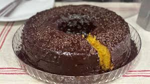

Receita - Bolo de Cenoura Delicioso
A da cobertura de chocolate vem de brinde!
- Ingredientes do Bolo:
- 4 ovos - 200 gramas
- 1 xícara (chá) de óleo - 210 ml
- 2 xícaras (chá) de cenoura picada - 270 gramas
- 2 xícaras (chá) de açúcar - 370 gramas
- 2 xícaras (chá) de farinha de trigo - 270 gramas
- 1 e 1/2 colher (sopa) rasa de fermento em pó - 22 gramas
- Ingredientes da Cobertura:
- Chocolate meio amargo - 200 gramas
- 1 caixinha de creme de leite - 200 gramas
- Modo de Preparo:
- pi pi pi poó pó pó
Link Externo
Link Interno
